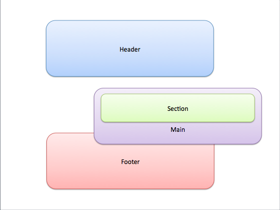
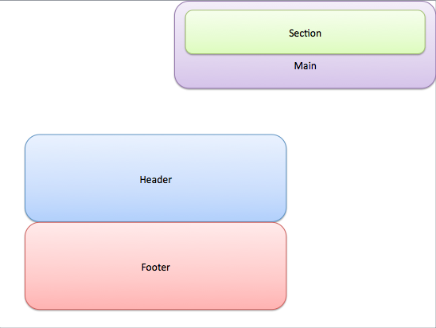
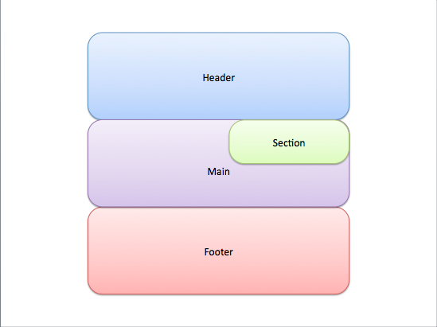

Let's start with the easy stuff. Static is the default position of your html elements. If you don't specify the position, they would just stack on top of each other.
Fixed position is just as the name implies, it is basically stays where you tell it to, whether it be in the middle of the right side with {position: fixed; right: 0; top: 50%;} or at the bottom with {position:fixed; bottom: 0;}. Please keep in mind that it is fixed relative to the browser so you can't scroll away from it. You can do fun things with this position such as adding a wood graphic border on all 4 sides so it's like you're looking through a window frame.
Relative position doesn't seem like much in the beginning because it acts just like static. That is until you give it some directions then boom, magic! The picture illustrates how the "main" section was set to relative and then told to move down and to the right with {position:relative; top:"some # of units"; left: "some # of units". One important thing to notice is that the original space occupied by the "main" section is still taking up space in the layout.
Absolute position is similar to relative position in that you can give it directions to shift around but one really important thing to remember is that it removes it from the flow of the page. What does that mean? Take a look at the picture. The "main" section was told to {position: absolute; top: 0 right: 0}. Notice how the space that was occupied by the "main" section isn't there anymore. Absolute will take an element out of the flow and place it to the top left corner of it's parent element.
What was most confusing about the absolute position was how to use it. Remember how the definition says it places it in the top left corner of the parent element? The first few times I tried it, it did exactly that but to the corner of my website. I scratched my head and couldn't figure out why! Turns out, the parent element has to have a relative position in order for the absolute element to stick to that specific corner. In the picture example, the "section"is set to {position: absolute; right:0} and it stuck to the top of the parent element, "main," instead of the website. Isn't that amazing?
